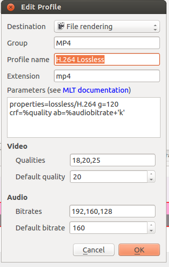

Render Profile Parameters¶
Contents
Render Profile Parameters - How to read them - ver 0.9.10¶
In version 0.9.10 the render profile parameters changed significantly.
Kdenlive now makes use of “property presets” delivered by the melt project (see melt doco). These presets are referenced by the properties=<preset> syntax. In the example illustrated, the render profile is referencing lossless/H.264. This refers to a property preset found in file H.264 found on the system at /usr/share/mlt/presets/consumer/avformat/lossless.
All the <presets> referenced in the render settings in Kdenlive will be referring to presets found at /usr/share/mlt/presets/consumer/avformat/ (on a default install). Note that you reference presets found in subdirectories of this folder using a <dirname>/<profile> syntax as shown in the example above.
properties=lossless/H.264
g=120
crf=%quality
ab=%audiobitrate+'k'
The preset files found at /usr/share/mlt/presets/consumer/avformat/ are simple text files that contain the melt parameters that define the rendering. An example is shown below. These are the same parameters that were used in earlier versions of Kdenlive – see next section for how to read those.
Contents of lossless/H.264:
f=mp4
acodec=aac
ab=384k
vcodec=libx264
intra=1
vb=0
g=0
bf=0
preset=medium
qscale=1
qp=0
coder=ac
<!--T:28-->
meta.preset.extension=mp4
meta.preset.note=Intra-frame only, lossless compressed MPEG-4 AVC with AAC audio
Render Profile Parameters - How to read them - earlier versions of Kdenlive¶

The parameters that go into a render profile derive from the ffmpeg program.
This is a worked example to show how you can understand what these parameters mean using the ffmpeg documentation.
In the example above the parameters are:
f=dvd
vcodec=mpeg2video
acodec=mp2
b=5000k
maxrate=8000k
minrate=0
bufsize=1835008
mux_packet_s=2048
mux_rate=10080000
ab=192k
ar=48000
s=720x576
g=15
me_range=63
trellis=1
profile=dv_pal_wide
pass=2
Looking up the ffmpeg help translates these parameters as shown below.
Main option is:
-f fmt force format
Video options are:
-vcodec codec force video codec ('copy' to copy stream)
-pass n select the pass number (1 or 2)
-b bitrate set bitrate (in bits/s)
-vb bitrate set bitrate (in bits/s)
-s size set frame size (WxH or abbreviation)
-me_range <int> E.V.. limit motion vectors range (1023 for DivX player)
-trellis <int> E.VA. rate-distortion optimal quantization
Audio options are:
-acodec codec force audio codec ('copy' to copy stream)
-ab bitrate set bitrate (in bits/s)
-ar rate set audio sampling rate (in Hz)
The AVCodecContext AVOptions include:
-b <int> E.V.. set bitrate (in bits/s)
-maxrate <int> E.V.. set max video bitrate tolerance (in bits/s)
-minrate <int> E.V.. set min video bitrate tolerance (in bits/s)
-g <int> E.V.. set the group of picture size
So all the render profile options are documented here in the ffmpeg documentation.
See also MLT doco on ConsumerAvFormat.